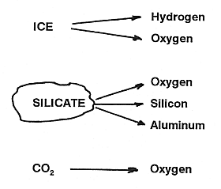
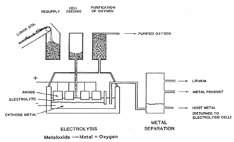
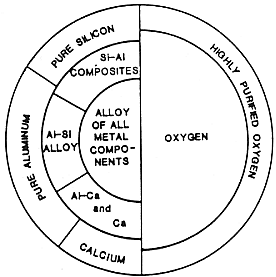
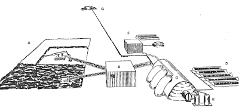
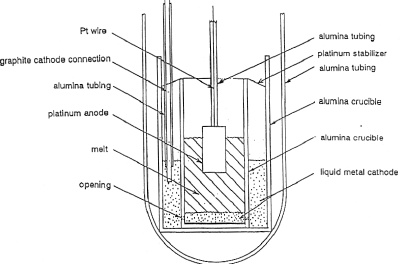
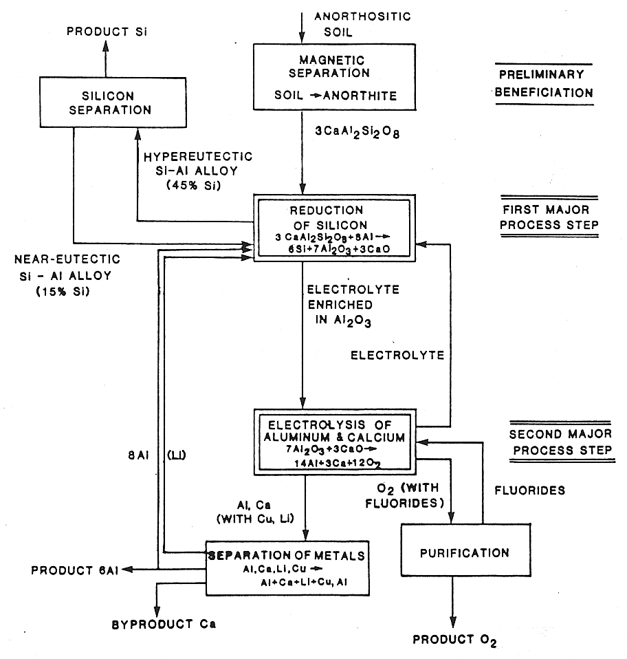

Extended missions into space, space settlements, and the installation of solar power satellites could benefit greatly from the utilization of lunar or other non-terrestrial resources. Cost considerations may reveal that it may play an essential role. Potential products include oxygen to be used as propellant and for life support, iron as structural and shielding material, aluminum as structural material and electrical conductor, and silicon as component of solar cells.
Raw materials for these products are plentiful. Rocks or soil (regolith) contain them as oxides. Electrolysis can play an important role in preparing useful materials from these resources, as Figure 1 illustrates.
|  |
| Fig. 1. Major electrolytic products from extraterrestrial oxides. |
To produce useful products from non-terrestrial resources, new processes need to be developed. Existing terrestrial processes are not applicable; at best elements of such technology can be adapted. A number of process possibilities have been explored, most of them indeed being electrochemical in nature or at least involving an electrochemical step. Electrochemistry presents alternatives where chemical reactants are not available, provided that electrical energy can be supplied, for example, by solar cells or nuclear power sources. In an electrochemical process, electrons are used at the cathode to reduce reactants, while oxidation occurs at the anode. The metals from the oxide ores may be deposited at the cathode while oxygen is evolved anodically, potentially in a process yielding two products simultaneously. For some of the metals, such as aluminum, electrochemical processing seems to offer the only practical alternative.
Non-terrestrial resources can be harvested most conveniently on the Moon. Abundant amounts of metals and oxygen are present there as metal oxides. Water for direct use or for the production of oxygen may (or may not) be found in polar regions. It has been postulated that it will be cost-effective to ship some materials from a lunar base not only further into space, but also into earth orbit: iron, for example, to be used for shielding purposes, or aluminum and silicon for solar power satellites. For Mars missions, carbon dioxide is a convenient in situ resource to supply oxygen. Asteroids offer additional resources, although their processing does not seem to have yet been explored in detail.
Oxygen from lunar resources
Production from ilmenite
Substantial development work, including pilot scale tests and experimentation at reduced gravity conditions, has been done by Carbotek in Houston, Texas. According to their process concept, oxygen is obtained from a mixed iron-titanium oxide, which is a major component of the Dark Mare Soil. In the first process step, this oxide (ilmenite, FeTiO3) is reduced with hydrogen gas. Subsequently, the resulting water is collected and electrolyzed to yield the desired oxygen, whereby the hydrogen is recovered for reuse in the process. The operation of the chemical reduction step in a fluidized bed received the bulk of the attention in Carbotek's process development effort, which was supported by NASA.Magma electrolysis
A potentially simple process to produce oxygen is the so-called magma electrolysis in which oxides (that is soil or rocks) are melted and the resulting melt electrolyzed to collect the anodically evolving oxygen. High temperatures, above 1,400oC (2552oF), are required to melt the silicates (mixed oxides of silicon and other metals). The resulting melts are chemically very aggressive at these temperatures. Solving materials problems for containments and anodes is the key to success for this technology.Work on the fundamentals of this process was conducted for many years at the Washington University in St. Louis, with support by the University of Arizona's NASA-sponsored Space Engineering Research Center, SERC, and by the Space Studies Institute, SSI. EMEC Consultants in its facility in New Kensington, Pennsylvania, also conducted electrolysis experiments on a laboratory scale. The apparatus and approach are discussed in the Appendix.
 Electrolysis of anorthite
Electrolysis of anorthite
|  |
| Fig. 2. Molten salt electrolytic production of oxygen from lunar soil. |
{kind=link}
Production from polar ice
If water is indeed present in polar regions of the Moon, it is expected to exist as ice that is mixed with other solid lunar components. Extraction in a vacuum distillation should not be too difficult. A relatively simple water electrolysis would yield the valuable products of oxygen and hydrogen. Transportation of the water to the processing site, or of the products to the place where they are being used, may present major obstacles.Oxygen from Martian carbon dioxide
The Martian Atmosphere contains carbon dioxide. In a cell involving an oxygen-ion-conducting solid electrolyte, carbon dioxide can be reduced at the cathode, while oxygen is evolved at the anode. The suitability of this approach has been demonstrated at the University of Arizona in Tucson.
Silicon, aluminum, and calcium from lunar soil
|  |
| Fig. 3. Options in the electrolysis of anorthositic lunar soil. |
|  |
| Fig. 4. Appearance of a lunar installation to produce silicon-aluminum composites, aluminum, calcium, and oxygen. |
{kind=link}
The appearance of the installation is dominated by the structure housing the electrolysis cells (C). There is also room in the building for the preparation of the silicon products and for maintenance equipment. The beneficiated soil is filled into bags on the side of the building, from which it is fed to the process, but not before it has been used to purify the oxygen evolving from the electrolysis cells. Associated with the building and visible from the outside are radiator devices (D), as the dissipation of waste heat requires a special technology in the lunar environment. In the depicted concept, a vacuum metal separation unit (E) is placed next to the electrolysis building.
Oxygen gas is liquefied (F), again requiring heat dissipation devices, and stored in a holding tank. A nuclear power source (G) supplies the necessary power. Nuclear power is advantageous compared to solar power, as it supplies power continuously, a requirement for operating a high-temperature process. Estimated power requirements are 2.5 MW. The weight of the process components, exclusive of power plant, ore preparation and oxygen liquefaction, was estimated between 400 and 500 tons.
Iron from lunar soil
High-vacuum experimentation at EMEC Consultants showed that iron oxide can be selectively evaporated from lunar solid simulants (MLS-1 representing Mare Soil). Such iron oxide then can be fed into an aqueous electrolysis process to form iron plates at the cathode and oxygen at the anode. This process may well be the most simple approach to arrive at a lunar product of commercial value.Concluding comments
Development of processes to utilize extraterrestrial resources has been de-emphasized by NASA in recent years. Priority is being given to the completion and operation of the Space Station and the exploration of Mars in preparation of a manned Mars Mission. In this context, it can be noted that proving the existence of water on the Moon, which may determine the selection of the process to produce oxygen there, somewhat surprisingly, has not been pursued. Furthermore, information on previous developments of various pertinent process alternatives is often difficult to acquire. The author believes that the present lack of activity should be corrected and that efforts in this area should be continued consistently, even if this has to occur at a low level.Appendix
Magma electrolysis
|  |
| Fig. 5. Laboratory apparatus to electrolyze molten lunar oxides to produce oxygen. |
{kind=link}
Process scheme for the co-production of silicon, aluminum, calcium, and oxygen
The process scheme developed by EMEC Consultants with the support of NASA is represented in Figure 6. It encompasses two major process steps and several additional auxiliary operations, such as the beneficiation of the ore, preparation of pure silicon, separation of calcium, and purification of the oxygen gas.
|  |
| Fig. 6. Process scheme for the production of silicon, aluminum, calcium, and oxygen. |
Preliminary beneficiation: pretreatment of the anorthositic ore
Anorthositic Highland Soil contains anorthite, CaAl2Si2O8, as the main component. It is, particularly compared to terrestrial silicates, low in amounts of sodium. Iron impurity levels are not high and can be reduced by a pretreatment of the soil. A magnetic separation approach has been pursued and found effective by Exportech, including the treatment of lunar ore samples. A selective evaporation to eliminate iron components of the soil employing high vacuum (readily available on the Moon) and elevated temperature, was studied by EMEC Consultants and indicated viability of this other approach.
First major process step: reduction of silicon
The anorthite, a calcium-aluminum-silicate, is dissolved in an electrolyte based on lithium-aluminum-fluoride. When exposed to liquid aluminum, the silicon oxide part of the anorthite is reduced according to
3CaAl2Si2O8 + 8Al ==> 6Si + 3CaO + 7Al2O3
The silicon is collected to form a hypereutectic melt of aluminum and silicon. When this melt cools, essentially pure silicon precipitates. Silicon platelets can be observed in the completely solidified melt in a matrix of an alloy of eutectic Al-Si composition. These silicon particles are separated from the remaining melt, for example, by centrifuging.
Second major process step: electrolysis of aluminum and calcium
The aluminum product is produced in the second major process step. The fluoride electrolyte containing aluminum oxide and calcium oxide is electrolyzed. At the cathode, aluminum and calcium are reduced into a liquid metal pool; laboratory experiments showed that some lithium unavoidably is co-reduced. The metals are subsequently separated to yield the product aluminum and the byproduct calcium which can readily serve as excellent electrical conductor in the noncorrosive lunar environment. Oxygen is evolved at the anode and constitutes a welcome byproduct; it can be purified by adsorbing impurities, such as fluorides, on the lunar soil serving as cell feed (in a similar approach as off-gases are generally treated in the terrestrial aluminum production process). Note that some aluminum, along with the lithium, is returned to the first major process step, to reduce the silicon.
Alternatively, the electrolytic reduction of the metals aluminum, calcium, and lithium can be conducted stepwise. First some aluminum is reduced selectively and collected as useful product. Then additional aluminum, lithium, and calcium are reduced. From this metal, sufficient calcium is separated to avoid enrichment of the system with calcium. The rest of the metal is made available for the reduction of silicon oxide.
Related article
For similar terrestial industrial electrolytic processes see:
Bibliography
- Space Manufacturing, Proceedings of the Princeton/AIAA/SSI Conferences, Volumes 7 to 10, American Institute of Aeronautics and Astronautics, Washington DC, 1989-1995.
- Lunar Production of Oxygen by Electrolysis, R. Keller, Volume 8,
pp 342-345, 1991.
- Products from Lunar Anorthite, D. L. Anthony, C. N. Cochran, W. C. Cochran, W. E. Haupin, R. Keller, and K. T. Larimer, Volume 7, pp 86-89, 1989.
- Lunar Production of Oxygen by Electrolysis, R. Keller, Volume 8,
pp 342-345, 1991.
Other Resources
Listings of electrochemistry books, review chapters, proceedings volumes, and full text of some historical publications are also available in the Electrochemistry Science and Technology Information Resource (ESTIR). (http://knowledge.electrochem.org/estir/)